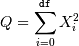
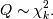
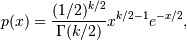
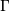
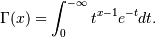

numpy.random.chisquare¶
- numpy.random.chisquare(df, size=None)¶
Draw samples from a chi-square distribution.
When df independent random variables, each with standard normal distributions (mean 0, variance 1), are squared and summed, the resulting distribution is chi-square (see Notes). This distribution is often used in hypothesis testing.
Parameters : df : int
Number of degrees of freedom.
size : tuple of ints, int, optional
Size of the returned array. By default, a scalar is returned.
Returns : output : ndarray
Samples drawn from the distribution, packed in a size-shaped array.
Raises : ValueError
When df <= 0 or when an inappropriate size (e.g. size=-1) is given.
Notes
The variable obtained by summing the squares of df independent, standard normally distributed random variables:

is chi-square distributed, denoted

The probability density function of the chi-squared distribution is

where  is the gamma function,

References
NIST/SEMATECH e-Handbook of Statistical Methods
Examples
>>> np.random.chisquare(2,4) array([ 1.89920014, 9.00867716, 3.13710533, 5.62318272])